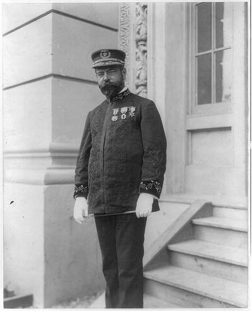

The March King
John Philip Sousa (1854–1932)
Sousa led the United States Marine Band from 1880 to 1892, then started his own band and toured the world with it. Crowds packed parks and fairgrounds to hear it, including Chicago’s World’s Fair in 1893.
His marches became the sound of the nation in 1898: bands played them at every parade, every rally, and every send-off for troops heading to Cuba and the Philippines.
Sousa did not like records. He called them “canned music” and warned Congress in 1906 that machines would stop Americans from making music themselves. On most of his band’s records, a deputy such as Arthur Pryor or Herbert L. Clarke conducted.
In 1917, at age 62, Sousa joined the Navy and trained band musicians at Great Lakes, a few miles from Waukegan.